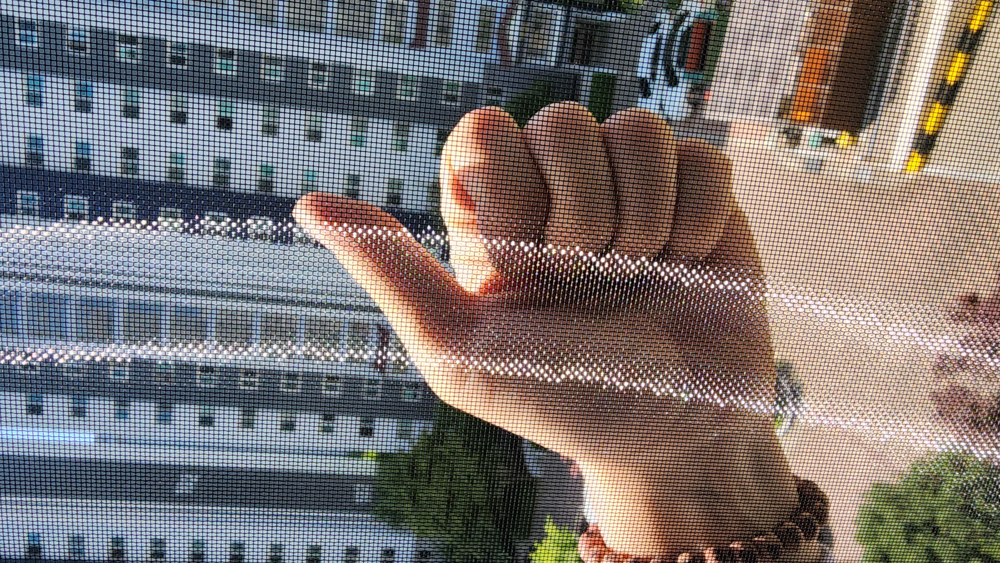

SCREEN 01
미세방충망
작은 날벌레까지 막아주는 촘촘한 선택
MICRO MESH
시야는 선명하게,
환기는 편안하게.
촘촘한 망으로 작은 날벌레 유입을 줄이고, 창을 열어두는 생활을 돕습니다. 창호 구조와 사용 환경을 확인해 알맞은 제품을 안내합니다.
시공 문의하기 ↗SCREEN 01

MICRO MESH
촘촘한 망으로 작은 날벌레 유입을 줄이고, 창을 열어두는 생활을 돕습니다. 창호 구조와 사용 환경을 확인해 알맞은 제품을 안내합니다.
시공 문의하기 ↗